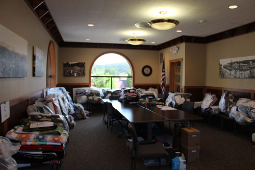
On the Wednesday before the show, we took over the Glacier Bank
community room to
accept the quilts, sort them, and organize them into piles for where they
will be hung.
The ladies who decide where the quilts will go are the amazing ones here, so much work!
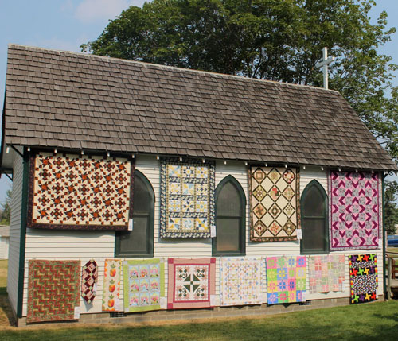
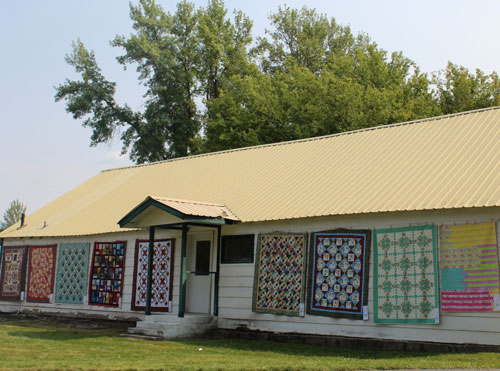
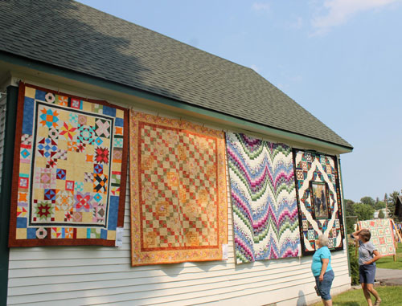
The Eureka Historical Village is the center of the
quilty activity. This is where the vendor booths are,
most of the quilts are displayed, where the food vendors set up, and where the
quilt boutique is located.
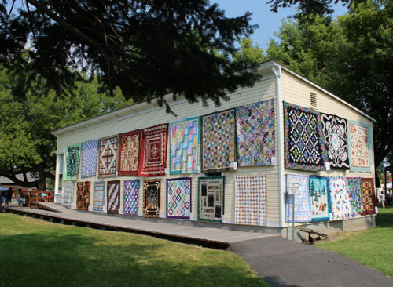
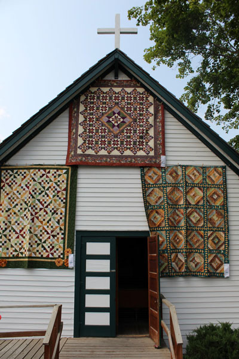
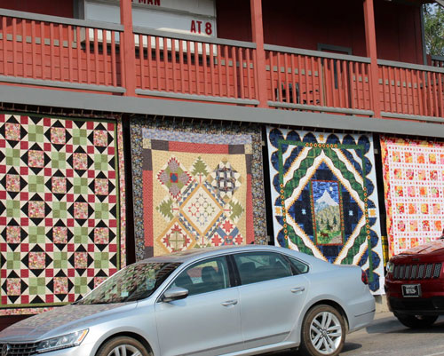
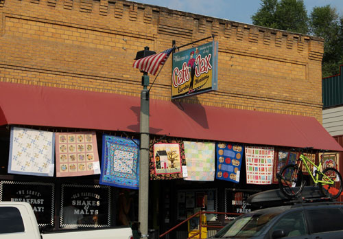
But the quilts don't stop there, they go on both sides
of the street - all the way up main street and beyond.
There's a large display at the Veteran's Memorial park as the 'end cap'
to the amazing display of quilts.
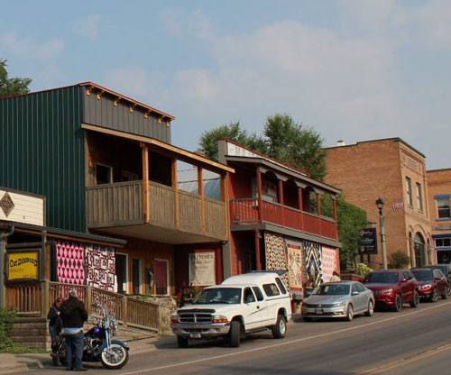
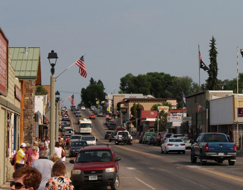


during the show (sad face!) but I was able to get the stain out, thankfully.
One of my volunteer duties was to photograph every one of the nearly 550
quilts in the show.
It was a huge job, but it is so great to have the pictures after the
event.
Below are a few of my favorite quilts from the show.
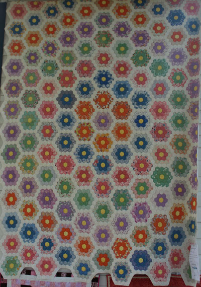
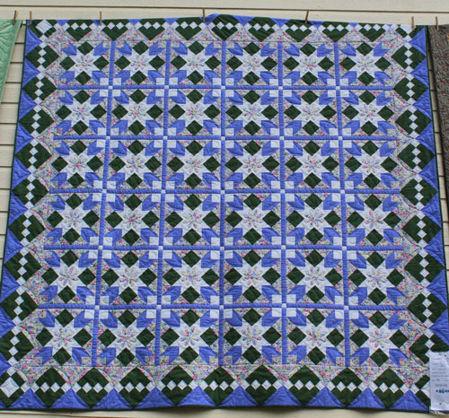
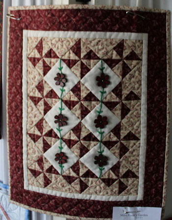
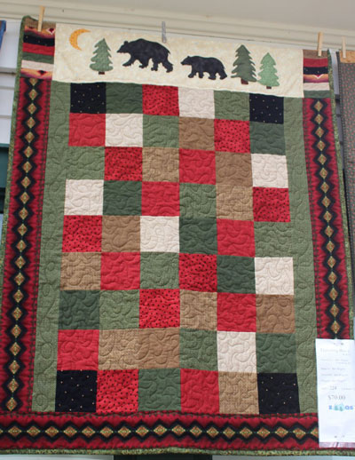
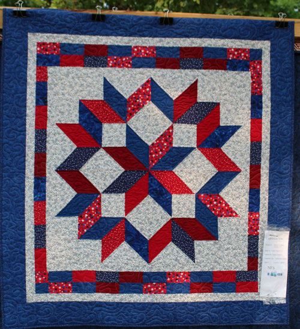
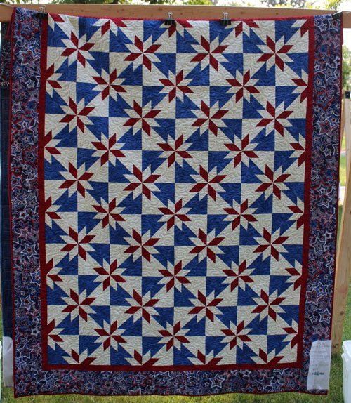
Bunny Franklin specializes in quilts for veterans. These are two of my favorites that she bought to the show.
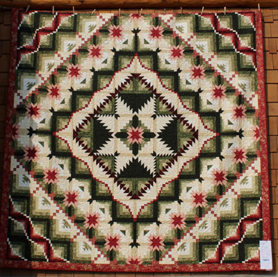
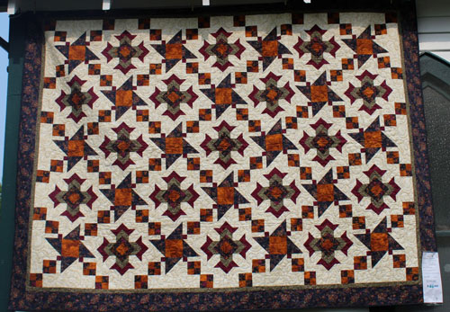
by local quilter Jackie Robinson to honor this town.
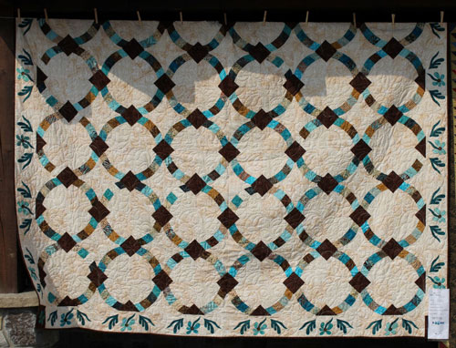
Another Jan Smith, called Metro Hoops
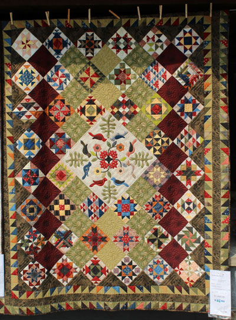
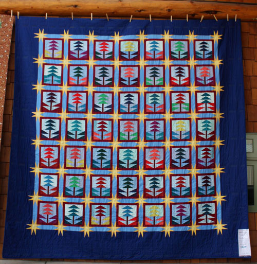
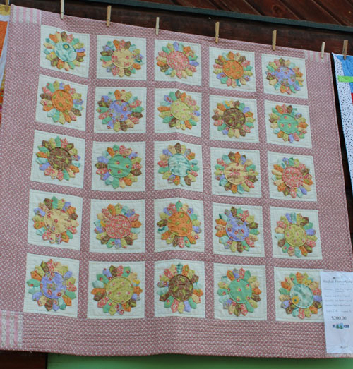
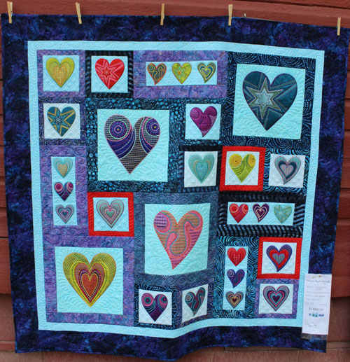
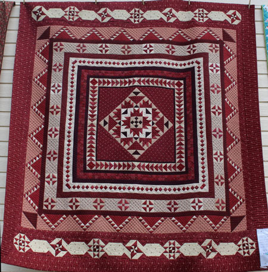
although I never find out which quilt wins the award.
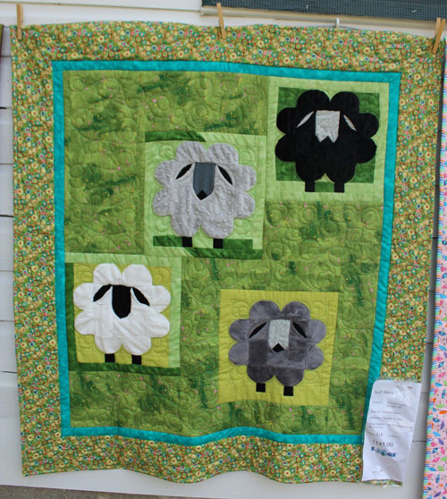
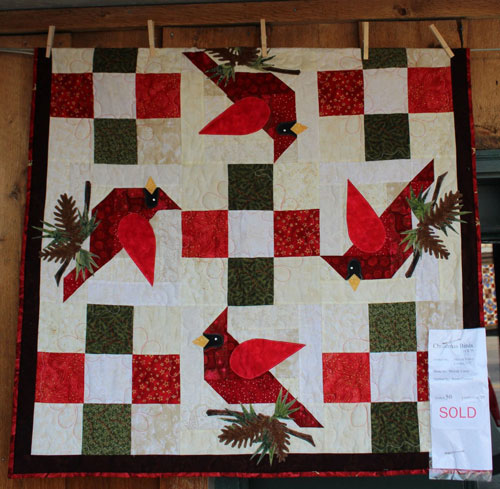
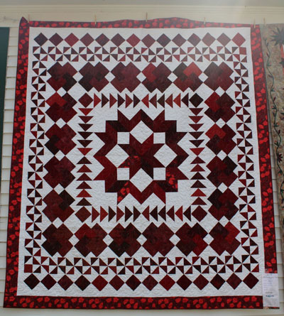
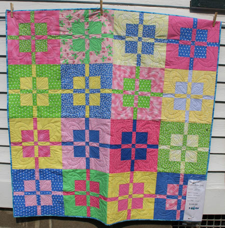
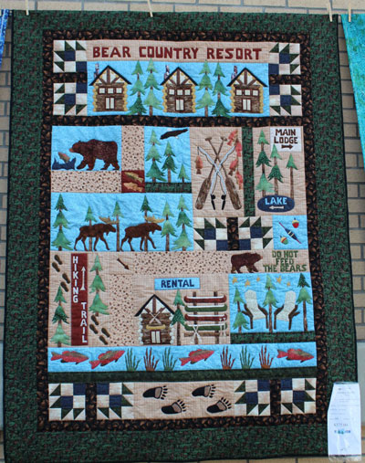
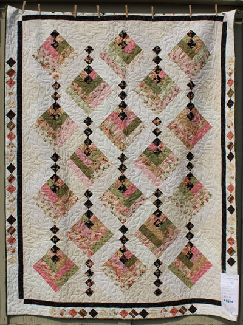